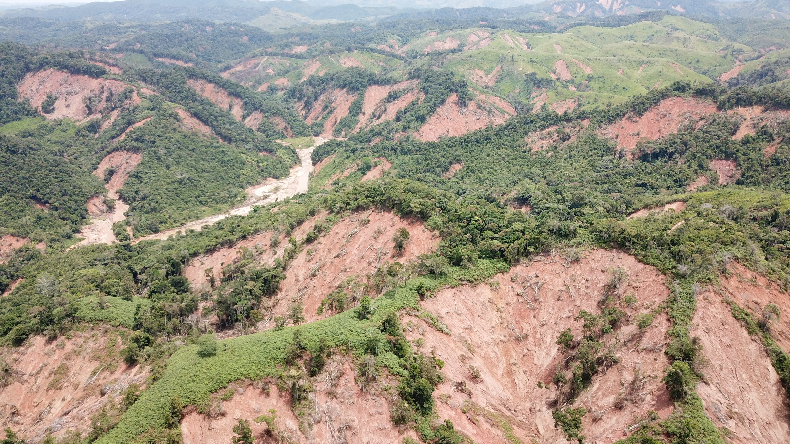
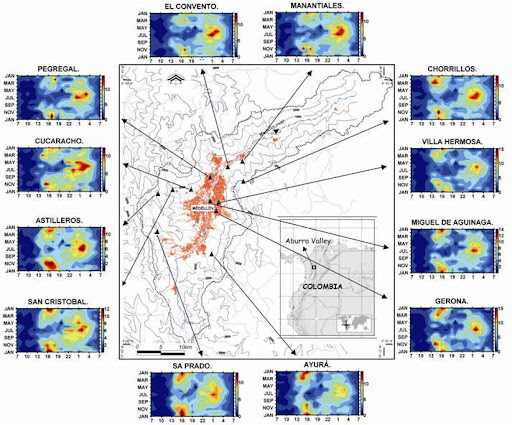
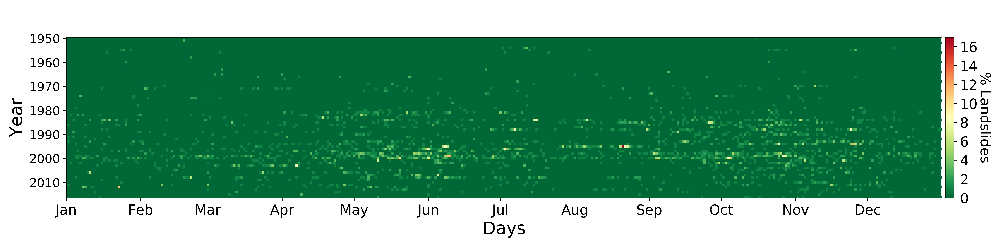
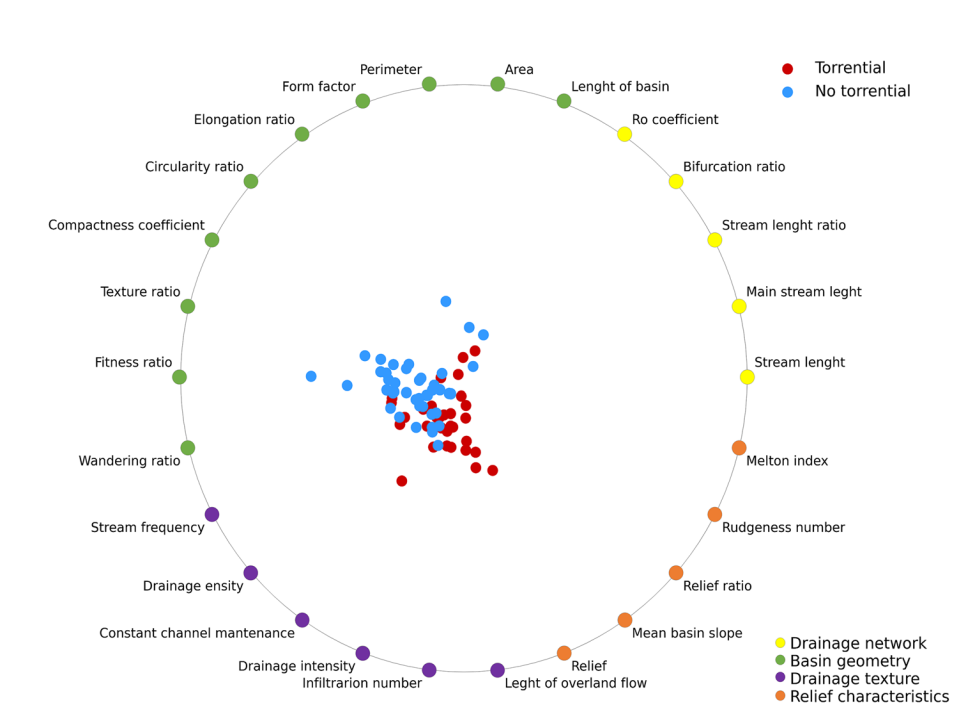
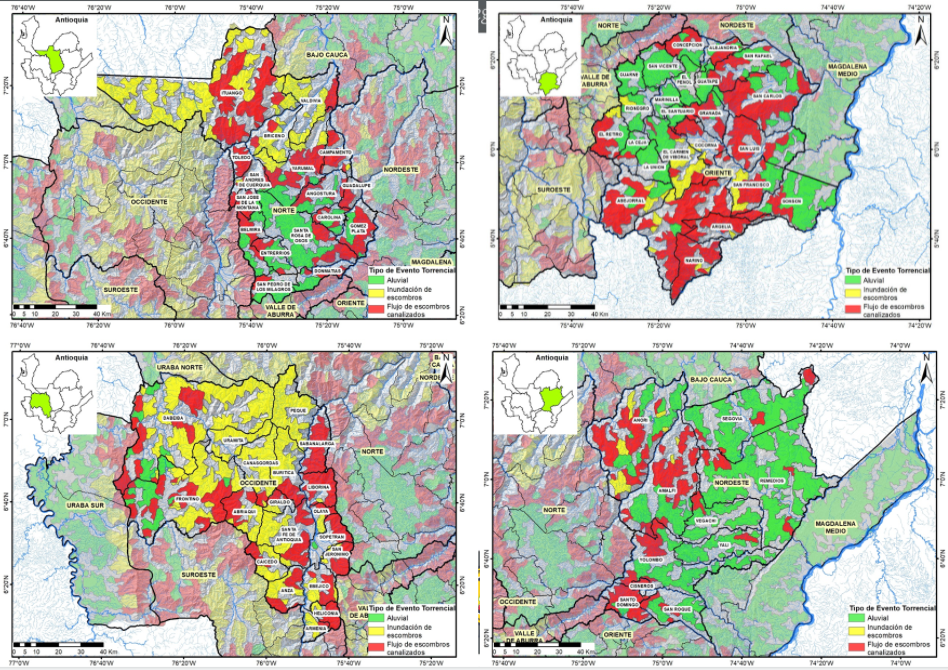
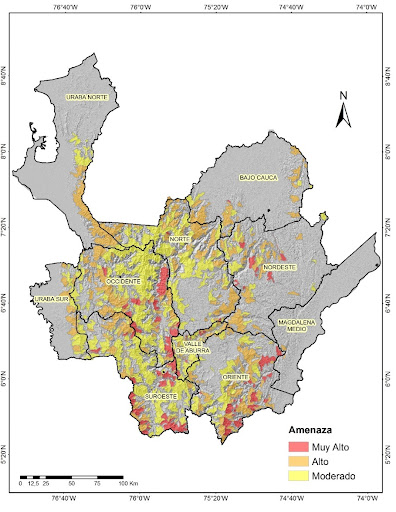
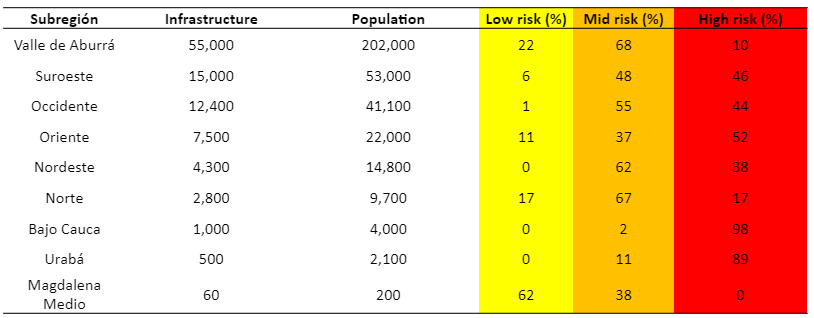

Climate-related challenges in water management - from floods to low water in Latin America
0:00:00
Hydrometeorological concatenated hazards in the Colombian Andes
Edier Aristizábal
Geohazards, Departamento de Geociencias y Medio Ambiente, Universidad Nacional de Colombia, Medellín, Colombia

Geohazard setting in Colombia

How safe is safe enough?

Colombian population


Hydrometeorological concatenated hazard

Debris flow (lahar) --> volcano

Debris flow --> earthquake

Debris flow --> rainfall

Debris flow --> rainfall

San Carlos (1990)

Tarazá (2007)

Yalí (2020)
Landslide clusters triggered by rainfall

Landslide clusters triggered by rainfall

Landslide clusters triggered by rainfall

Rainfall threshold for landslide clusters

The frequency-area distribution


Antecedent rainfall influence (90 days)
Mocoa

Antecedent rainfall influence (90 days)
Mocoa

Rainfall
Landslides
Rainfall vs Landslides

Torrential flow susceptibility
Torrential flow susceptibility
Torrential flow hazard
Torrential flow risk

Torrential flow risk scenario
Final ideas...
- Early warning system
- Land use planning
Thanks

https://geohazards.com.co